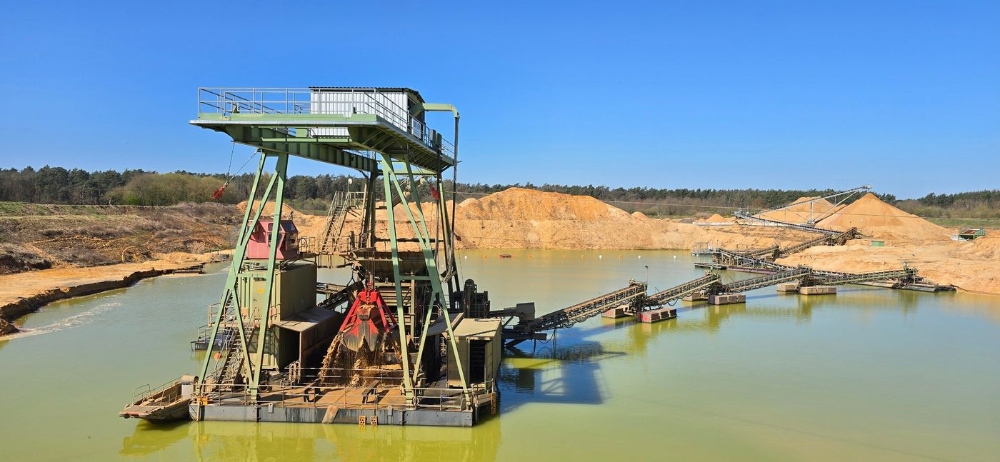
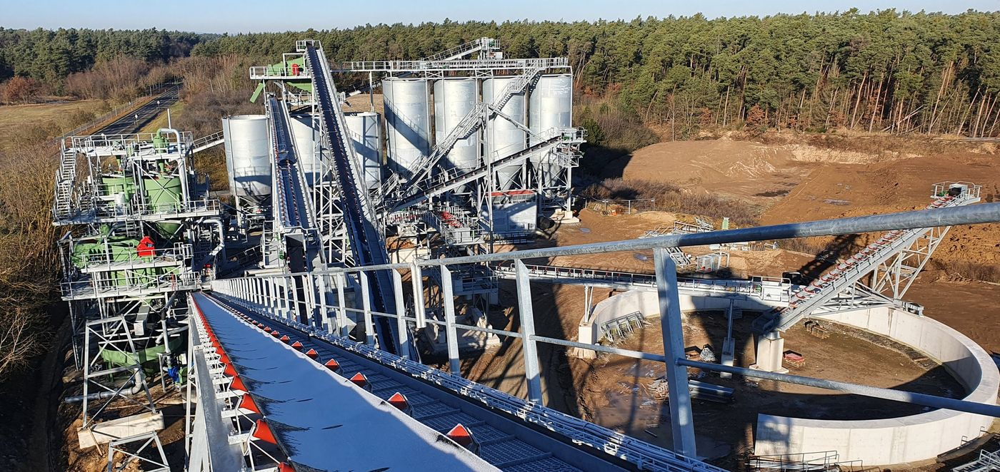
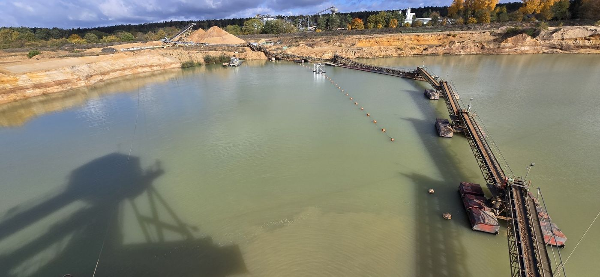

Mechatroniker oder Geräteführer (m/w/d) – ein sicherer, zukunftsorientierter Arbeitsplatz in Vollzeit. Bewirb dich in unter 60 Sekunden – ganz ohne Anschreiben und Lebenslauf.
Beide Stellen in Vollzeit – im Kieswerk am Haselsee in Babenhausen-Harreshausen, mitten im Dreieck Darmstadt, Hanau und Aschaffenburg.
Ohne Sand und Kies kein Haus, keine Straße, keine Brücke. Im Kieswerk am Haselsee gewinnen und bereiten wir genau diese Rohstoffe auf – mit großen Maschinen und moderner Anlagentechnik.
Sand und Kies sind die Grundlage für fast jedes Bauprojekt – gebraucht wird beides immer. Das macht deinen Arbeitsplatz sicher.
Moderne Aufbereitungsanlagen und Abläufe, die laufend weiterentwickelt werden – ein Arbeitsplatz, der mit der Zeit geht.
Radlader, Schwimmgreifer und Aufbereitungsanlagen – du arbeitest mit Maschinen, die man nicht alle Tage sieht.
Bedienen, warten, optimieren, verladen – dein Arbeitstag ist so vielseitig wie das Werk selbst.
Du kennst deine Anlagen und arbeitest selbstständig – statt nur Anweisungen abzuarbeiten.
Am Haselsee in Babenhausen-Harreshausen – gut erreichbar aus Darmstadt-Dieburg, Hanau und Aschaffenburg.
Dein Arbeitsplatz ist das Kieswerk am Haselsee – mit Schwimmgreifer, Schwimmbändern und einer neuen Aufbereitungsanlage. Ein paar Eindrücke vorab.



Stelle wählen, ein paar kurze Fragen beantworten, Kontaktdaten hinterlassen – fertig. Kein Lebenslauf, kein Anschreiben, keine Datei-Uploads.
Du bekommst schnell eine Rückmeldung, und wir klären erste Fragen kurz und unkompliziert am Telefon.
Du schaust dir das Kieswerk, die Anlagen und das Team an – und wenn's passt, machen wir dir ein Angebot.
Nur ein paar Klicks bis zu deiner Bewerbung – in unter 60 Sekunden.
Lieber direkt anrufen oder Fragen zur Bewerbung? 06073 6002-0